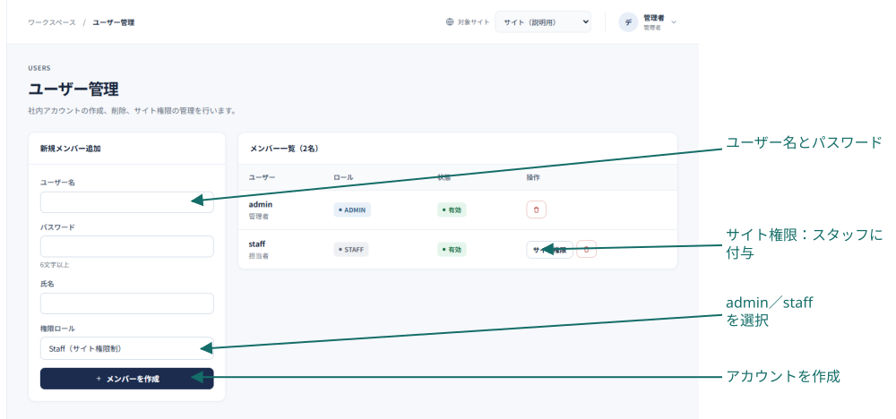

アカウントの作成
ユーザー名・パスワード・役割を入力 → メンバーを作成 → 入力欄をクリア → 一覧を更新。
パスワードは6文字以上です。一般の担当者にはStaff、システム全体の管理者にはAdminを選択します。
スタッフへのサイト権限の設定
サイト権限 → サイトを選択 → 保存する → 権限を保存して閉じる。キャンセル → 保存しない。
確認すること
スタッフは権限があるサイトの内容を管理できます。承認とアカウント管理は管理者が行います。
アカウントの削除
- 一覧で削除するユーザー名を確認します。
- ごみ箱を押し、確認して削除します。